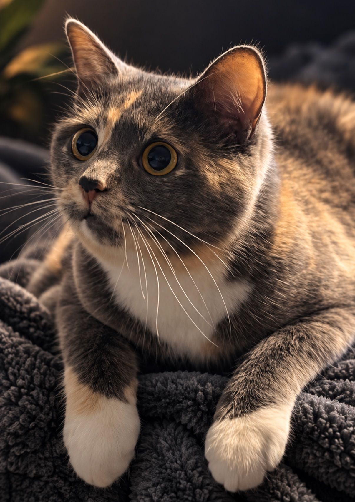

In Loving Memory
Blaze

Blaze was only a couple of years old when a car took her from us. But in that short time, she became an unforgettable part of her person's life.
She was always waiting at the door when he came home. She followed him everywhere. She was a constant companion — loyal, curious, and always close by.
A few months later, when it came time to name a new company, there was really only one choice.
Blaze.
Today, Blaze is the heart of BlazeLogic. Her name is on the company, her face is part of our identity, and as the mascot of Golf Bets, she rides along for every round.
BlazeLogic is about building things that are useful, memorable, and a little different — and there couldn't be a better symbol for that than the little cat who inspired it all.
She may be gone, but she'll never be forgotten.